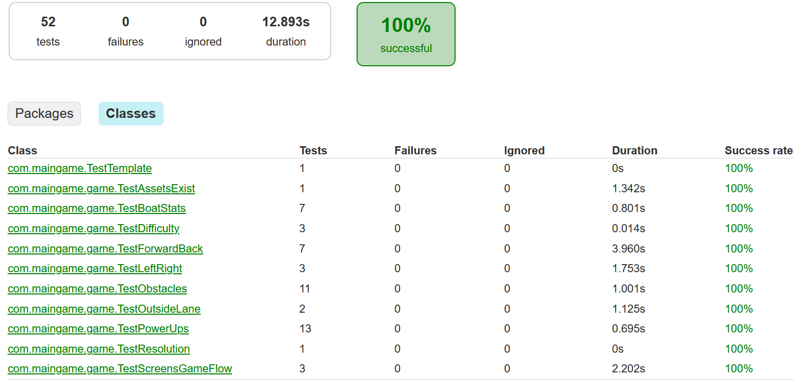
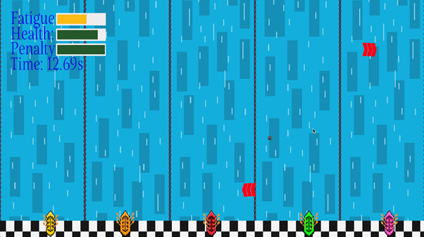
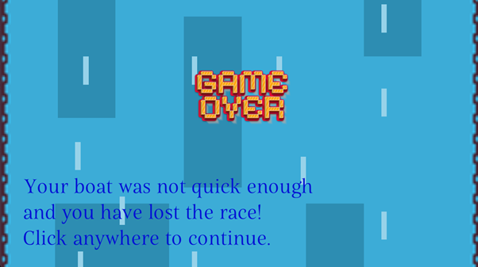
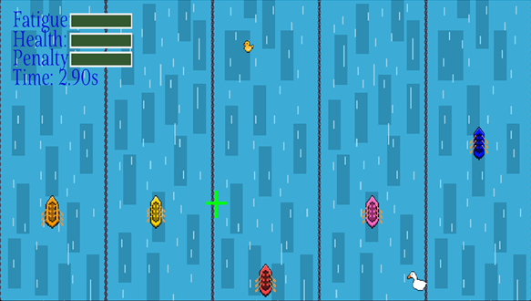
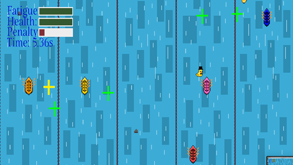
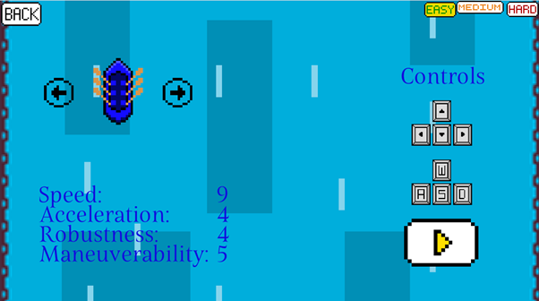
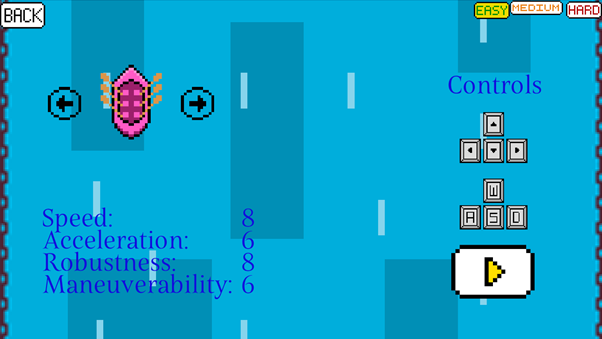

The following evidence is pulled from in-game live screenshots JUnit / JaCoCo test reports.

(Manual) finish line reached game stop (all)
Evidence:
No JUnit testing evidence, but manual testing evidence confirms that this is functioning:

(Manual) Game over screen if not in top 3 in leg 3
No JUnit testing evidence, but manual testing evidence confirms that this is functioning:

(Manual) penalty time increase if outbound(True)
No JUnit testing evidence, but manual testing evidence confirms that this is functioning:


The running and functioning of the game manually, as evidenced in previous tests, evidence by implication that game start True is working.
The above JUnit test result proves by automated test that, prior to the game commencing, the “Fatigue” element of the game is in its desired state.
(Manual) boat chosen true
This is tested and fully functional by implication of the above tests. The fact that the game can commence and make use of a user-selected boat (the user can choose their boat as evidenced in Test 14) implies that boat chosen True.
(Manual) switching boat true
